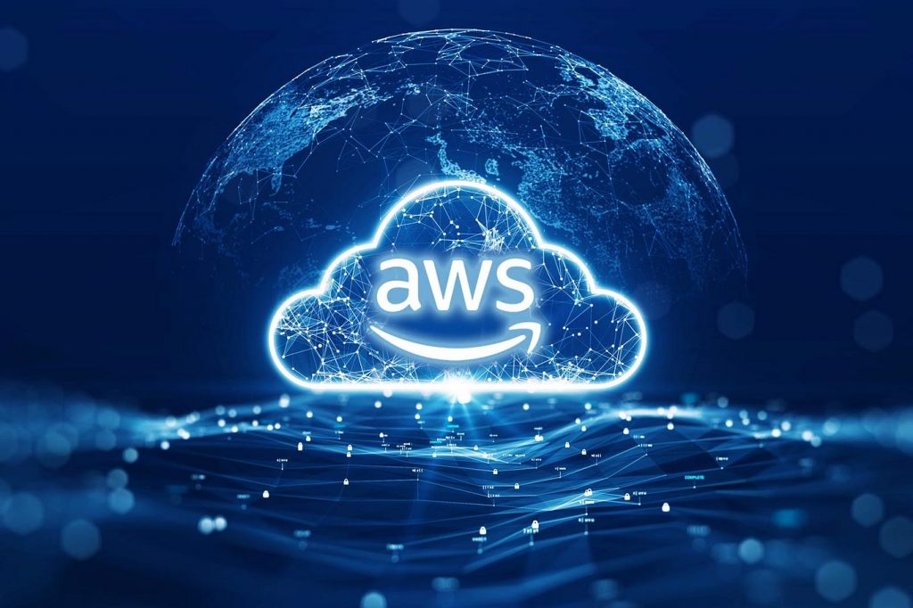
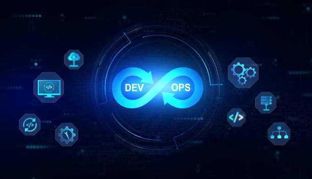
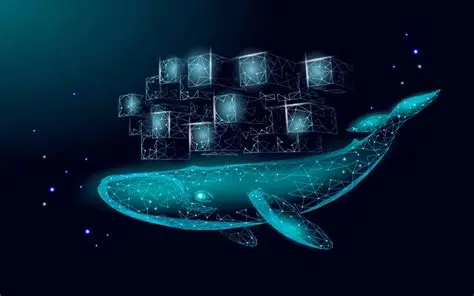

01
Linux fundamentals
Understand the Linux operating system, terminal and essential commands.
A structured introduction to Linux, cloud computing, version control and container-based application deployment at Guru Nanak Dev Engineering College, Ludhiana.
Explore the programmeThis four-week programme introduces learners to foundational tools and concepts used in cloud computing and DevOps. It progresses from Linux command-line fundamentals to cloud infrastructure, Git-based version control and Docker containerisation.
The programme combines concept-based learning with practical topics to develop familiarity with common development and deployment workflows.
Programme: Cloud Computing and DevOps
Duration: Four Weeks
Institution: GNDEC, Ludhiana
Domain: Cloud Computing and DevOps
Understand the Linux operating system, terminal and essential commands.
Learn cloud concepts, service models and infrastructure.
Understand how to track changes and manage source code.
Explore containers and the foundations of application deployment.
The programme is organised into four progressive topic areas.
Build an understanding of basic Networking and Linux systems and the command-line environment.
Explore Week 1 →
Explore cloud computing models, infrastructure and the services used to deliver resources over networks.
Explore Week 2 →
Learn how version control helps track changes and support collaborative software development.
Explore Week 3 →
Understand containerisation and the building blocks used to package and deploy applications.
Explore Week 4 →Explore command-line exercises, cloud computing concepts, Git workflows, Docker and application deployment fundamentals through a dedicated practical learning guide.
Explore practical learningRecognise core Linux concepts and use basic terminal commands.
Describe cloud service models, deployment options and infrastructure.
Explain repositories, commits, branches and remote collaboration.
Understand Docker images, containers and deployment basics.
Use foundational Cloud Computing and DevOps terminology.
Recognise how tools fit into a basic development workflow.
We acknowledge Guru Nanak Dev Engineering College, Ludhiana, for providing the institutional setting for this four-week training programme. Appreciation is extended to the faculty, trainers and all contributors involved in supporting technical learning and academic development.